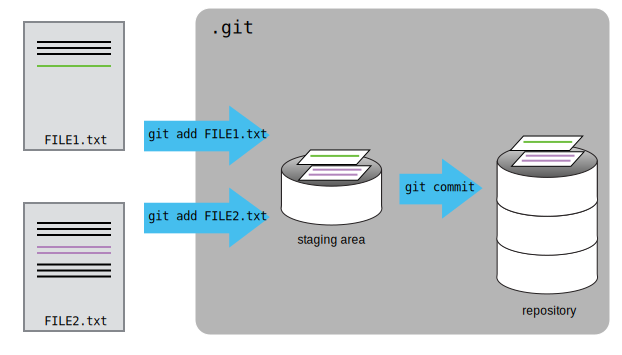

Overview
Teaching: 20 min
Exercises: 0 minQuestions
How do I record changes in Git?
How do I check the status of my version control repository?
How do I record notes about what changes I made and why?
Objectives
Go through the modify-add-commit cycle for one or more files.
Explain where information is stored at each stage of Git commit workflow.
Let’s start off by learning some Markdown. Markdown is a rich text format,
which allows us to add a few features (such as bold, italic,
underline, and weblinks) to normal text. This website is actually
written in Markdown. You can find a Markdown
Cheatsheet
online.
Basically, headers start with a # symbol:
# Header 1
Header 1
### Header 3
Header 3
Emphasis is done with asterisks **bold** = bold, and lists are
just numbered. See the cheatsheet.
Let’s create a file called margherita.md that contains some notes
about making a margherita cocktail. (Markdown files usually have the
.md suffix).
(We’ll use nano to edit the file;
you can use whatever editor you like.
In particular, this does not have to be the core.editor you set
globally earlier.)
$ nano margherita.md
Type some text into the margherita.md file, e.g.:
# Margherita
## Ingredients
1. tequila
2. triple sec
3. lime juice
margherita.md now contains a few lines, which we can see by running:
$ ls
margherita.md
$ cat margherita.md
# Margherita
## Ingredients
1. tequila
2. triple sec
3. lime juice
If we check the status of our project again, Git tells us that it’s noticed the new file:
$ git status
On branch master
Initial commit
Untracked files:
(use "git add <file>..." to include in what will be committed)
margherita.md
nothing added to commit but untracked files present (use "git add" to track)
The “untracked files” message means that there’s a file in the directory
that Git isn’t keeping track of.
We can tell Git to track a file using git add:
$ git add margherita.md
and then check that the right thing happened:
$ git status
On branch master
Initial commit
Changes to be committed:
(use "git rm --cached <file>..." to unstage)
new file: margherita.md
Git now knows that it’s supposed to keep track of margherita.md,
but it hasn’t recorded these changes as being final yet.
To get it to do that, we need to run one more command:
$ git commit -m "Start recipe for margherita"
[master (root-commit) 373fb47] Start recipe for margherita
1 file changed, 5 insertions(+)
create mode 100644 margherita.md
When we run git commit,
Git takes everything we have told it to save by using git add
and stores a copy permanently inside the special .git directory.
This permanent copy is called a commit
(or revision) and its short identifier is 373fb47
(Your commit will have a different identifier.)
We use the -m flag (for “message”)
to record a short, descriptive, and specific comment that will help us remember later on what we did and why.
If we just run git commit without the -m option,
Git will launch nano (or whatever other editor we configured as core.editor)
so that we can write a longer message.
Good commit messages start with a brief (<50 characters) summary of changes made in the commit. If you want to go into more detail, add a blank line between the summary line and your additional notes.
If we run git status now:
$ git status
On branch master
nothing to commit, working directory clean
it tells us everything is up to date.
If we want to know what we’ve done recently,
we can ask Git to show us the project’s history using git log:
$ git log
commit 373fb4773ff2ab36416485bb5e86270d46ad415b
Author: Chris Richardson <chris@bpi.cam.ac.uk>
Date: Tue Dec 5 09:53:58 2017 +0000
Start recipe for margherita
git log lists all commits made to a repository in reverse chronological order.
The listing for each commit includes
the commit’s full identifier
(which starts with the same characters as
the short identifier printed by the git commit command earlier),
the commit’s author,
when it was created,
and the log message Git was given when the commit was created.
Where Are My Changes?
If we run
lsat this point, we will still see just one file calledmargherita.md. That’s because Git saves information about files’ history in the special.gitdirectory mentioned earlier so that our filesystem doesn’t become cluttered (and so that we can’t accidentally edit or delete an old version).
Now suppose I add more information to the file.
(Again, we’ll edit with nano and then cat the file to show its contents;
you may use a different editor, and don’t need to cat.)
$ nano margherita.md
$ cat margherita.md
# Margherita
## Ingredients
1. Tequilia
2. Triple Sec
3. Lime Juice
4. Ice
When we run git status now,
it tells us that a file it already knows about has been modified:
$ git status
On branch master
Changes not staged for commit:
(use "git add <file>..." to update what will be committed)
(use "git checkout -- <file>..." to discard changes in working directory)
modified: margherita.md
no changes added to commit (use "git add" and/or "git commit -a")
The last line is the key phrase:
“no changes added to commit”.
We have changed this file,
but we haven’t told Git we will want to save those changes
(which we do with git add)
nor have we saved them (which we do with git commit).
So let’s do that now. It is good practice to always review
our changes before saving them. We do this using git diff.
This shows us the differences between the current state
of the file and the most recently saved version:
$ git diff
diff --git a/margherita.md b/margherita.md
index eafc011..77e5f25 100644
--- a/margherita.md
+++ b/margherita.md
@@ -3,3 +3,4 @@
1. Tequilia
2. Triple Sec
3. Lime Juice
+4. Ice
The output is cryptic because
it is actually a series of commands for tools like editors and patch
telling them how to reconstruct one file given the other.
If we break it down into pieces:
- The first line tells us that Git is producing output similar to the Unix
diffcommand comparing the old and new versions of the file. - The second line tells exactly which versions of the file
Git is comparing;
eafc011and77e5f25are unique computer-generated labels for those versions. - The third and fourth lines once again show the name of the file being changed.
- The remaining lines are the most interesting, they show us the actual differences
and the lines on which they occur.
In particular,
the
+marker in the first column shows where we added a line.
After reviewing our change, it’s time to commit it:
$ git commit -m "Add some ice"
$ git status
On branch master
Changes not staged for commit:
(use "git add <file>..." to update what will be committed)
(use "git checkout -- <file>..." to discard changes in working directory)
modified: margherita.md
no changes added to commit (use "git add" and/or "git commit -a")
Whoops:
Git won’t commit because we didn’t use git add first.
Let’s fix that:
$ git add margherita.md
$ git commit -m "Add some ice"
[master 34961b1] Add some ice
1 file changed, 1 insertion(+)
Git insists that we add files to the set we want to commit before actually committing anything. This allows us to commit our changes in stages and capture changes in logical portions rather than only large batches. For example, suppose we’re adding a few citations to our supervisor’s work to our thesis. We might want to commit those additions, and the corresponding addition to the bibliography, but not commit the work we’re doing on the conclusion (which we haven’t finished yet).
To allow for this, Git has a special staging area where it keeps track of things that have been added to the current change set but not yet committed.
Staging Area
If you think of Git as taking snapshots of changes over the life of a project,
git addspecifies what will go in a snapshot (putting things in the staging area), andgit committhen actually takes the snapshot, and makes a permanent record of it (as a commit). If you don’t have anything staged when you typegit commit, Git will prompt you to usegit commit -aorgit commit --all, which is kind of like gathering everyone for the picture! However, it’s almost always better to explicitly add things to the staging area, because you might commit changes you forgot you made. (Going back to snapshots, you might get the extra with incomplete makeup walking on the stage for the snapshot because you used-a!) Try to stage things manually, or you might find yourself searching for “git undo commit” more than you would like!

Let’s watch as our changes to a file move from our editor to the staging area and into long-term storage. First, we’ll add a few more lines to the file:
$ nano margherita.md
$ cat margherita.md
# Margherita
## Ingredients
1. Tequilia
2. Triple Sec
3. Lime Juice
4. Ice
## Method
Chill glass, add ice, lime juice, triple sec and tequila
$ git diff
diff --git a/margherita.md b/margherita.md
index 77e5f25..573eea0 100644
--- a/margherita.md
+++ b/margherita.md
@@ -3,4 +3,7 @@
1. Tequilia
2. Triple Sec
3. Lime Juice
+
+## Method
+Chill glass, add ice, lime juice, triple sec and tequila
So far, so good:
we’ve added some lines to the end of the file
(shown with a + in the first column).
Now let’s put that change in the staging area
and see what git diff reports:
$ git add margherita.md
$ git diff
There is no output: as far as Git can tell, there’s no difference between what it’s been asked to save permanently and what’s currently in the directory. However, if we do this:
$ git diff --staged
diff --git a/margherita.md b/margherita.md
index 77e5f25..573eea0 100644
--- a/margherita.md
+++ b/margherita.md
@@ -3,4 +3,7 @@
1. Tequilia
2. Triple Sec
3. Lime Juice
+
+## Method
+Chill glass, add ice, lime juice, triple sec and tequila
it shows us the difference between the last committed change and what’s in the staging area. Let’s save our changes:
$ git commit -m "Add a method"
[master 941ecf6] Add a method
1 file changed, 3 insertions(+)
check our status:
$ git status
On branch master
nothing to commit, working directory clean
and look at the history of what we’ve done so far:
$ git log
commit 941ecf6d4a945bf88d86e4e3791dbd43b2558b6e
Author: Chris Richardson <chris@bpi.cam.ac.uk>
Date: Tue Dec 5 10:03:18 2017 +0000
Add a method
commit 171e6b2d2f52fe45f8a353536d22c189125229dc
Author: Chris Richardson <chris@bpi.cam.ac.uk>
Date: Tue Dec 5 10:00:09 2017 +0000
Add some ice
commit 373fb4773ff2ab36416485bb5e86270d46ad415b
Author: Chris Richardson <chris@bpi.cam.ac.uk>
Date: Tue Dec 5 09:53:58 2017 +0000
Start recipe for margherita
Paging the Log
When the output of
git logis too long to fit in your screen,gituses a program to split it into pages of the size of your screen. When this “pager” is called, you will notice that the last line in your screen is a:, instead of your usual prompt.
- To get out of the pager, press
q.- To move to the next page, press the space bar.
- To search for
some_wordin all pages, type/some_wordand navigate throught matches pressingn.
Limit Log Size
To avoid that
git logcover all your terminal screen you can limit the numbers of commit that Git will list by using-NwhereNis the number of commits that you want to receive the information. For example, if you only want the information from the last commit you can use$ git log -1commit 941ecf6d4a945bf88d86e4e3791dbd43b2558b6e Author: Chris Richardson <chris@bpi.cam.ac.uk> Date: Tue Dec 5 10:03:18 2017 +0000 Add a methodYou can also reduce the quantity of information using the
--onelineoption:$ git log --oneline* 941ecf6 Add a method * 171e6b2 Add some ice * 373fb47 Start recipe for margheritaYou can also combine the
--onelineoptions with others. One useful combination is$ git log --oneline --graph --all --decorate* 941ecf6 (HEAD -> master) Add a method * 171e6b2 Add some ice * 373fb47 Start recipe for margherita
To recap, when we want to add changes to our repository,
we first need to add the changed files to the staging area
(git add) and then commit the staged changes to the
repository (git commit):

Choosing a Commit Message
Which of the following commit messages would be most appropriate for the last commit made to
margherita.md?
- “Changes”
- “Added line ‘Chill glass, add ice, lime juice, triple sec and tequila’ to margherita.md”
- “Add method for making margherita”
Solution
Answer 1 is not descriptive enough, and answer 2 is too descriptive and redundant, but answer 3 is good: short but descriptive.

Committing Changes to Git
Which command(s) below would save the changes of
myfile.txtto my local Git repository?
$ git commit -m "my recent changes"
$ git init myfile.txt$ git commit -m "my recent changes"
$ git add myfile.txt$ git commit -m "my recent changes"
$ git commit -m myfile.txt "my recent changes"Solution
- Would only create a commit if files have already been staged.
- Would try to create a new repository.
- Is correct: first add the file to the staging area, then commit.
- Would try to commit a file “my recent changes” with the message myfile.txt.
Committing Multiple Files
The staging area can hold changes from any number of files that you want to commit as a single snapshot.
- Add some text to
margherita.mdreorganising the method as a list.- Create a new file
manhattan.mdwith your initial thoughts about a different cocktail (or something else of your choice).- Add changes from both files to the staging area, and commit those changes.
Solution
First we make our changes to the
margherita.mdandmanhattan.mdfiles:$ nano margherita.md $ cat margherita.md# Margherita ## Ingredients 1. Tequilia 2. Triple Sec 3. Lime Juice 4. Ice ## Method 1. Chill glass 2. Add ice 3. Add lime juice 4. Add triple sec 5. Add tequila 6. Mix$ nano manhattan.md $ cat manhattan.md# Manhattan ## Ingredients Whiskey, vermouth, bittersNow you can add both files to the staging area. We can do that in one line:
$ git add margherita.md manhattan.mdOr with multiple commands:
$ git add margherita.md $ git add manhattan.mdNow the files are ready to commit. You can check that using
git status. If you are ready to commit use:$ git commit -m "Updated Margherita and started on Manhattan"[master cc127c2] Updated Margherita and started on Manhattan 2 files changed, 2 insertions(+)~~~
Author and Committer
For each of the commits you have done, Git stored your name twice. You are named as the author and as the committer. You can observe that by telling Git to show you more information about your last commits:
$ git log --format=fullWhen commiting you can name someone else as the author:
$ git commit --author="Vlad Dracula <vlad@tran.sylvan.ia>"Create a new repository and create two commits: one without the
--authoroption and one by naming a colleague of yours as the author. Rungit logandgit log --format=full. Think about ways how that can allow you to collaborate with your colleagues.Solution
$ git add me.txt $ git commit -m "Updated Vlad's bio." --author="Frank N. Stein <franky@monster.com>"[master 4162a51] Updated Vlad's bio. Author: Frank N. Stein <franky@monster.com> 1 file changed, 2 insertions(+), 2 deletions(-) $ git log --format=full commit 4162a51b273ba799a9d395dd70c45d96dba4e2ff Author: Frank N. Stein <franky@monster.com> Commit: Vlad Dracula <vlad@tran.sylvan.ia> Updated Vlad's bio. commit aaa3271e5e26f75f11892718e83a3e2743fab8ea Author: Vlad Dracula <vlad@tran.sylvan.ia> Commit: Vlad Dracula <vlad@tran.sylvan.ia> Vlad's initial bio.
Key Points
git statusshows the status of a repository.Files can be stored in a project’s working directory (which users see), the staging area (where the next commit is being built up) and the local repository (where commits are permanently recorded).
git addputs files in the staging area.
git commitsaves the staged content as a new commit in the local repository.Always write a log message when committing changes.